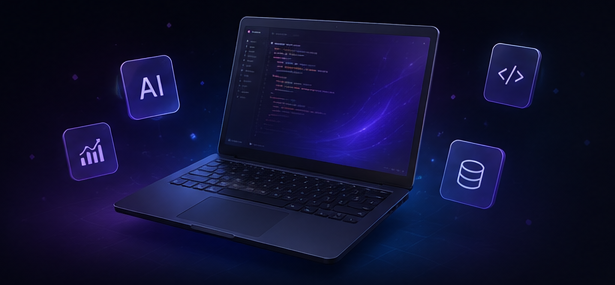
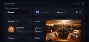
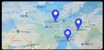
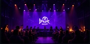
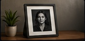
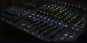
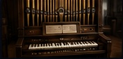
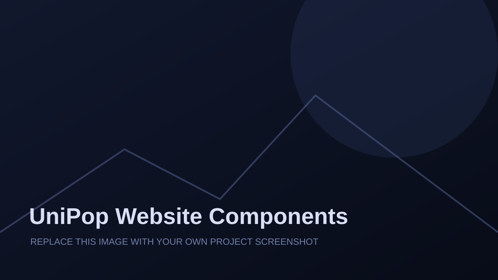
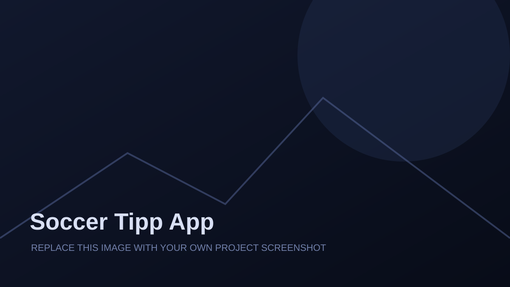

Newsletter Tool
Newsletter builder for UniPop. JSON, Mailjet integration, templates and automation.
View project →Experiments, tools & ideas built with
AI, code and curiosity.

Newsletter builder for UniPop. JSON, Mailjet integration, templates and automation.
View project →Daily content automation tool integrated with UniPop data and displays.
View project →
Digital signage system for displays, playlists and remote management.
View project →
Local activities and courses around Luxembourg with interactive map.
View project →
Live events, workshops and activities bringing the UniPop community together.
View project →Virtual reality experiences for education, well-being and exploration.
View project →Podcast and content for the Day of the Luxembourgish Language.
View project →
Interactive AI portrait frame with voice, vision and natural conversations.
View project →
Custom announcement system for events and installations.
View project →
Restoration and documentation of a historical organ from around 1900.
View project →
Experiments with quantum computing concepts on Raspberry Pi.
View project →
Bluetooth upgrade for vintage jukeboxes with modern tech and classic style.
View project →
Long-term observational study of continuity, memory, behavior and perceived identity in human–AI interaction.
View project →
Modern website for the Institut für Geschichte und Soziales.
View project →
Selected landing pages and interactive web components created for UniPop.
View project →
Practical audio toolbox developed for IFEN production workflows.
View project →
Interactive football prediction app built as a lightweight web project.
View project →Projects, prototypes and experiments combining web development, AI, audio, hardware and interactive technology.
Selected milestones and project launches can be added here.
Add your preferred contact details, LinkedIn or GitHub profile here.